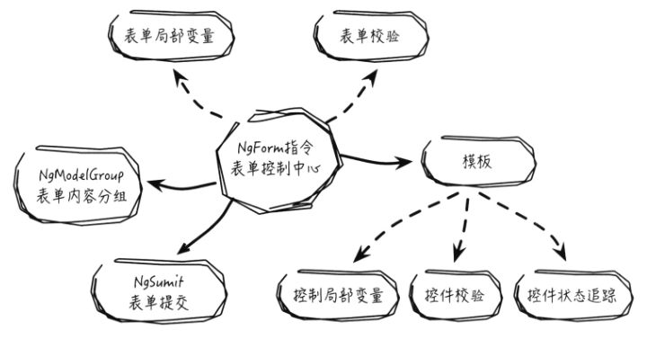

Angular2入门-模板-2
表单
表单的使用场景非常广泛，常见的场景为登录注册，数据添加修改，文件上传等。虽然HTML内置了一些表单标签，但它的一些标签特性存在浏览器兼容问题，并且自定义校验规则，表单数据获取，处理，提交等流程比较复杂。
Angular提供了模板驱动（Template-Driven Forms）及模型驱动（Model-Driven Forms）两种方式来构建表单，模板驱动模式使用模板表单内置指令、内置校验的方式来构建表单；模型驱动模式采用自定义表单、自定义校验方式来构建表单。
模板表单
通过通讯录例子了解模板中的表单，在添加联系人的表单中，需手机联系人姓名、电话、住址、邮箱、生日等信息，在模板中加入表单及其控件元素，创建文件form.component.ts:1
2
3
4
5
6
7
8
9
10
11
12
13
14
15
16
17
18
19
20
21
22//form.component.ts
//...
({
selector: 'add-contact',
template: `
<h3>添加联系人</h3>
<form>
<ul>
<li>
<label for="name">姓名：</label>
<input type="text" name="name" />
</li>
<!-- ... -->
<li>
<button type="submit">添加</button>
<button type="button">取消</button>
</li>
</ul>
</form>
`
})
export class FormComponent{}
上述仅仅只是实现了一个简单的表单视图，并未添加任何交互处理，在Angular中，表单的交互是由表单的特有指令实现的。
表单指令
表单指令是指Angular对常用表单交互功能尽量封装扩展，其目的是负责处理数据绑定、指定校验规则、显示校验错误信息等，最终使开发者能在模板中快速构建交互友好的表单。
表单指令涉及知识点及其联系如下：

NgForm指令
NgForm指令是表单的控制中心，负责处理表单内的页面逻辑，为普通的表单元素扩充了许多额外的特性，所有的表单指令都需要在NgForm指令内部才能正常运行。
使用NgForm指令需要在根模块中添加：1
2
3
4
5
6
7
8
9
10
11
12
13
14
15
16
17
18
19//app.module.ts
import { NgModule } from '@angular/core';
import { BrowserModule } from '@angular/platform-browser';
import { FormsModule } from '@angular/forms';
import { AppComponent } from './app.component';
import { FormComponent } from './form.component';
({
imports: [
BrowserModule,
FormsModule
],
declarations: [
AppComponent,
FormComponent
],
bootstrap: [AppComponent]
})
export class AppModule {}
上述代码，导入了FormsModule模块和FormComponent组件，将FormComponent组件添加到@NgModule元数据的declarations数组中，其目的是在整个模块中都可以使用FormComponent组件，将FormsModule模块添加到@NgModule元数据的imports数组中，这使得整个应用的模板驱动表单中都可以使用特有的表单指令。
接下来就可以在FormComponent组件的模板中显示使用NgForm指令，因为添加了FormsModule模块后，Angular模板在编译解析时，遇到form标签会自动创建一个NgForm指令并且将其添加到该form标签上。
NgForm指令控制了通过NgModel指令和name属性创建的控件类，并且也会跟踪控件类的属性变化，包括有效性属性（valid）。
NgModel指令
NgModel指令是表单数据绑定的核心所在，是表单运用中最重要的一个指令，几乎所有的表单特性都依赖NgModel指令实现。NgModel指令实现了表单控件的数据绑定，提供了控件状态跟踪及校验功能，Angular表单支持单向和双向数据绑定，表单的单向数据绑定使用了[ngModel],双向数据绑定使用[(ngModel)]：1
2<input type="text" name="contactName" [ngModel]="curContact.name" />
<input type="text" name="contactName" [(ngModel)]="curContact.name" />
在控件中使用NgModel属性绑定，必须给该控件添加name属性，否则会报错，因为NgForm指令会为表单建立一个空间对象FormControl的集合，以此来作为表单控件的容器。控件的NgModel属性绑定会以name作为唯一标识符来注册并生成一个FormControl，将其加入到FormControl的集合中。
一些常用的表单控件：
单选框：
单选框控件（Radio）实现双向数据绑定，同一组单选框控件的所有[(ngModel)]属性都必须绑定同一个模型数据，且name属性也必须相同：1
2<input type="radio" name="sex" [ngModel]="curContact.sex" value="female"/>女
<input type="radio" name="sex" [(ngModel)]="curContact.sex" value="male"/>男
复选框：
复选框（Checkbox）用于表示表单复选框是否被选中，[(ngModel)]属性绑定的是一个布尔值：1
<input type="checkbox" name="lock" [ngModel]="curContact.lock" />禁用
单选下拉框
单选下拉框控件（Select）的双向数据绑定，需要结合option元素绑定的值来实现，option选项的元素属性的绑定目标有两种，分别为value和ngValue，当在option元素中使用value绑定数据时，其返回值类型是基本数据类型，当使用ngValue绑定数据时，其返回值类型是对象数据类型。
在构建下拉框前，需要先定义下拉框列表所需的数据：1
2
3
4
5
6
7
8
9export class FormComponent {
interests: any[] = [
{value: 'reading', display: '阅读'},
{value: 'traveling', display: '旅游'},
{value: 'sport', display: '运动'},
];
// ...
}
接下来实现一个例子：1
2
3
4
5
6
7
8
9<!-- 单选框被选中后返回基本数据类型 -->
<select name="interestValue" [(ngModel)]="curContact.interestValue">
<option *ngFor="let interest of interests" [value]="interest.value">{{ interest.display }}</option>
</select>
<!-- 单选框被选中后返回基本对象类型 -->
<select name="interestObj" [(ngModel)]="curContact.interestObj">
<option *ngFor="let interest of interests" [ngValue]="interest">{{ interest.display }}</option>
</select>
使用[value]来绑定下拉选项的value属性值，当选中后“阅读”后，curContact.interestValue的值将变成reading。而使用[ngValue]，curContact.interestObj的值将变成{value: 'reading', display: '阅读'}
多选下拉框
多选下拉框控件（Multiple Select）实现下拉选择多个选项的功能，多选下拉框的用法和单选下拉框类似，不同的是多选下拉框返回的数据是一个由所有被选项数据组成的数组。
以下实现一个多选下拉框，返回一个成员为字符串的数组。1
2
3<select multiple name="interestMul" [(ngModel)]="curContact.interestMul">
<option *ngFor="let interest of interests" [value]="interest.value">{{ interest.display }}</option>
</select>
使用[value]绑定下拉选项，选中“旅游”和“阅读”两项，则curContact.interestMul的值将变成['reading','traveling']。若使用[ngValue]绑定，则返回的数组对象为：[ {value: 'reading', display: '阅读'},{value: 'traveling', display: '旅游'},]
模板局部变量
模板局部变量（Template Reference Variables，简称局部变量），是模板中对DOM元素或指令（包括组件）的引用，可以使用在当前元素、兄弟元素或任何子元素中。
DOM元素局部变量
若在标签元素中定义DOM元素局部变量，只需在其局部变量名前加上#符号,或用ref-前缀。1
2
3
4
5
6<li>
<label for="name">姓名：</label>
<input type="text" #contactName name="contactName" id="contactName" />
<input type="number" ref-telNum name="telNum" id="telNum" />
<p>{{ contactName.value }} -- {{ telNum.value }}</p>
</li>
Angular会自动把局部变量设置为对当前DOM元素对象的引用，如上的局部变量contactName引用的就是document.getElementById("contactName")对象,在模板中定义局部变量后，可以直接在模板的其他元素中使用该元素的DOM属性，如contactName.value和telNum.value。
表单指令局部变量
表单指令也可以定义局部变量，其引用方式与DOM元素局部变量的引用方式不同，表单指令的局部变量在定义时需手动初始化为特定指令的代表值，最终解析后会被赋值为表单指令实例对象的引用。
NgForm表单局部变量
在表单中定义局部变量contactForm，将contactForm变量初始化为ngForm，并在表单控件加入ngModel及contactName属性：1
2
3
4
5
6
7
8
9
10
11
12
13<form #contactForm="ngForm">
<ul>
<li>
<label for="contactName">姓名：</label>
<input type="text" name="contactName" [(ngModel)]="curContact.name"/>
</li>
<li>
<label for="telNum">电话：</label>
<input type="text" name="telNum" [(ngModel)]="curContact.telNum"/>
</li>
<!-- ... -->
</ul>
</form>
局部变量contactForm为NgForm指令实例对象的引用，可以在模版读取NgForm实例对象的属性值，如追踪表单的valid属性状态，当被包含的所有控件都有效时，contactForm.valid的值为true，否则为false，在控件中添加ngModel和name属性后，若向姓名控件输入“张三”，电话控件输入“12345678”，则contactForm.value的值为：1
2
3
4{
name: '张三',
telName: '12345678'
}
contactForm对象的value属性是一个简单的JSON对象，该对象的键是对应控件元素的name属性值，而其值对应控件元素的value值。
NgModel控件局部变量
一个文本控件，将[(ngModel)]初始化为联系人姓名，并添加控件局部变量name：1
2<input type="text" name="contactName" [(ngModel)]="curContact.name" #contactName="ngModel" />
<p>{{ contactName.valid }}</p>
局部变量contactName是对NgModel指令实例对象的引用，可以在模板中读取NgModel实例兑现的属性值，如通过contactName.valid可以追踪控件状态、表单校验不通过时的提示错误信息等。
Angular提供NgForm表单局部变量和NgModel控件局部变量，在模板中为追踪表单状态及表单的数据校验提供了便利。
表单状态
表单NgForm和NgModel指令都可以用于追踪表单状态来实现数据校验，表单NgForm和NgModel指令都有5个表示状态的属性，属性值都是布尔类型，并都可通过对应的局部变量获取，NgForm追踪的是整个表单控件的状态，NgModel追踪的是其所在表单控件的状态，表单状态的属性语义如下表：
| 状态 | true/false |
|---|---|
| valid | 表单值是否有效 |
| pristine | 表单值是否未改变 |
| dirty | 表单值是否已改变 |
| touched | 表单是否已被访问过 |
| untouched | 表单是否未被访问过 |
用户操作会改变表单的属性状态，所以可以检查当前的属性状态值来赋予表单特定的样式或加入特定的处理逻辑。
NgModelGroup指令
NgModelGroup指令是Angular提供的另一个特色指令，可以对表单输入内容进行分组，方便在语义上区分不同类型额输入，例如“姓名”可以细分为“姓”和“名”，“地址”可以细分为“城市”、“街道”、“区”、“街”等，通过NgModelGroup可以将其进行分组收集：1
2
3
4
5
6
7
8
9
10
11
12
13
14
15
16
17<form #contactForm="ngForm">
<fieldset ngModelGroup="nameGroup" #nameGroup="ngModelGroup">
<label for="firstname">姓：</label>
<input type="text" name="firstname" [(ngModel)]="curContact.firstname"/>
<label for="lastname">名：</label>
<input type="text" name="lastname" [(ngModel)]="curContact.lastname"/>
</fieldset>
<fieldset ngModelGroup="addressGroup" #addressGroup="ngModelGroup">
<label for="street">街：</label>
<input type="text" name="street" [(ngModel)]="curContact.street"/>
<label for="zip">区：</label>
<input type="text" name="zip" [(ngModel)]="curContact.zip"/>
<label for="city">城市：</label>
<input type="text" name="city" [(ngModel)]="curContact.city"/>
</fieldset>
<!-- ... -->
</form>
通过ngModelGroup指令，此时contactForm.value的值为:1
2
3
4
5
6
7
8
9
10
11{
nameGroup: {
firstname: '',
lastname: ''
},
addressGroup: {
street: '',
zip: '',
city: ''
},
}
除此外，NgModelGroup实例对象的valid属性可以单独校验其所在分组控件的输入是否有效，例如姓名分组中，只有curContact.firstname和curContact.lastname都有效时，局部变量nameGroup.valid才为true。
ngSubmit事件
ngSubmit事件可以响应表单里类型为submit的按钮操作，并负责控制表单的提交流程，当按钮被单击后，会触发表单的ngSubmit事件。
示例组件模板代码如下：1
2
3
4
5
6
7
8<form #contactForm="ngForm" (ngSubmit)="doSubmit(contactForm.value)">
<!-- ... -->
<li class="form-group">
<button type="submit" class="btn btn-default" [disabled]="!contactForm.valid">添加</button>
<button type="reset" class="btn btn-default">重置</button>
</li>
</form>
提交按钮逻辑如下：1
2
3
4
5export class FormComponent{
doSubmit(formValue: any){
// ...
}
}
上例中，在form上绑定了ngSubmit事件，ngSubmit事件的类型是EventEmitter，当提交按钮被单击后，首先执行表单原生的onSubmit事件，接着执行FormComponent组件中定义的doSubmit()方法，该方法接收contactForm.value的值作为参数传入，并对传入数据处理。
自定义表单样式
NgModel指令不仅仅能追踪表单控件的状态，还能根据表单控件的状态使用对应的CSS状态类来更新表单控件的类名，表单控件包括6个CSS状态类：
| 状态 | 为true时的CSS类 | 为false时的CSS类 |
|---|---|---|
| 控件是否已经被访问过 | ng-touched | ng-untouched |
| 控件值是否已经变化 | ng-dirty | ng-prinstine |
| 控件值是否有效 | ng-valid | ng-invalid |
表单控件的CSS类名会根据表单控件状态变化而变化，在实际场景里，可以自定义对应CSS类的样式。
表单校验
表单校验（Validation）是用来检查表单的输入值是否满足设定的规则，若不满足，则将相关状态立即反馈给用户，Angular封装了相关表单校验规则，提供了灵活的接口，以便能够高效的完成相关表单校验。
Angular表单内置校验（Build-in Validation）
- required : 判断表单控件值是否为空
- minlength ： 判断表单控件值的最小长度
- manlenght : 判断表单控件值的最大长度
- pattern : 判断表单控件值的匹配规则
使用Angular内置校验与使用普通HTML校验一致，直接在表单控件中添加对应的校验属性即可：1
<input type="text" minlength=3 maxlength=10 [(ngModel)]="curContact.name" name="contactName" required />
HTML原生支持的校验样式不可控，可以在form标签中添加novalidate属性来屏蔽原生校验。
表单自定义校验
Angular提供的表单内置校验基本能满足大部分校验需求，但若需要实现复杂的表单校验功能，可以使用Angular提供的表单自定义校验（Custom Validator）。
创建一个自定义校验规则：比如用户名需要是邮箱或手机号等：1
2
3
4
5
6
7
8
9
10
11
12
13// validate-username.ts
import { FormControl } from '@angular/froms';
const EMAIL_REGEXP = new RegExp('[a-z0-9]+@[a-z0-9]+.com');
const TEL_REGEXP = new RegExp('1[0-9]{10}');
export function validateUserName(c: FormControl){
return (EMAIL_REGEXP.test(c.value) || TEL_REGEXP.test(c.value) ? null : {
userName: {
valid: false,
errorMsg: '用户名必须是邮箱或手机号'
}
});
}
在模型驱动方式构建的表单中使用自定义校验，需要在表单组件所在的模块代码中导入ReactiveFormsModule,并在模块的@NgModule元数据imports数组中加入ReactiveFormsModule。1
2
3
4
5
6
7
8
9
10
11// ...
import { ReactiveModule } from '@angular/forms';
import { FormComponent } from './form.component';
import { AppComponent } from './app.component';
({
imports: [BrowserModule, ReactiveFormsModule],
declarations: [AppComponent, FormComponent],
bootstrap: [AppComponent]
})
export class AppModule{}
导入ReactiveFormsModule后，可在表单组件FormComponent中使用模型驱动方式构建表单，构建表单组件及使用自定义校验的代码如下：1
2
3
4
5
6
7
8
9
10
11
12
13
14
15
16
17
18import { Component } from '@angular/core';
import { FormGroup, FromControl } from '@angular/forms';
import { validateUserName } from './validate-username';
({
selector: 'add-contact',
template: `
<form [formGroup]="customForm">
<label> 姓名：</label>
<input type="text" formControlName="customName" />
</form>
`
})
export class FormComponent{
customForm = new FormGroup({
customName: new FormControl('', validateUserName)
});
}
上述代码中，定义了customForm(FormGroup表单实例对象)和customName(FormControl控件实例对象)，在构建FormControl实例对象customName时传入的参数中，第一个参数为控件返回值的初始值，第二个参数为该控件的校验配置方法。
此外，校验配置可以使用Validators的内置校验，如Validators.required()、Validators.minLength()等，与直接在表单控件元素中添加required、minlength属性效果一致。使用Validators内置校验，需要先从@angular/forms导入Validators：1
2
3
4
5
6import { Validators } from '@angular/forms';
// ...
customForm = new FormGroup({
customName: new FormControl('', Validators.minLength(4))
});
// ...
若需要在一个表单中添加多个校验器，可以在校验配置参数中使用数组、数组元素为对应的校验方法。1
2
3customForm = new FormGroup({
customName: new FormControl('', [Validators.minLength(4), validateUserName])
});